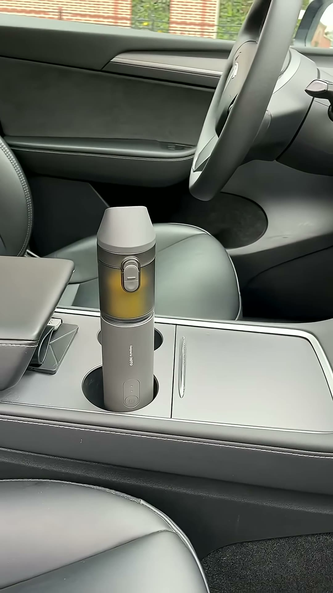
1HOTO AutoCare 차량용 청소기
쌀알 같은 부스러기도 한 번에, 노즐 바꿔 시트 틈·반려견 털까지, 바람으로 불어내기도 돼요
4-in-1 (흡입·송풍·압축팩) · 무선
판매자 배송 · 구매 옵션 확인
영상 속 제품이에요.

1쌀알 같은 부스러기도 한 번에, 노즐 바꿔 시트 틈·반려견 털까지, 바람으로 불어내기도 돼요
4-in-1 (흡입·송풍·압축팩) · 무선
판매자 배송 · 구매 옵션 확인
HOTO AutoCare Air Duster & Vacuum 모델이에요. 노즐 구성과 색상은 구매 화면에서 확인해 주세요. 쿠팡 상품평이 아직 적은 제품이라 판매자 정보와 배송일을 꼭 확인해 주세요.
영상 속 차량·소품은 포함되지 않아요. 최종 가격·구성·배송·재고는 쿠팡 구매 화면에서 확인해 주세요.
영상 속 제품이에요.
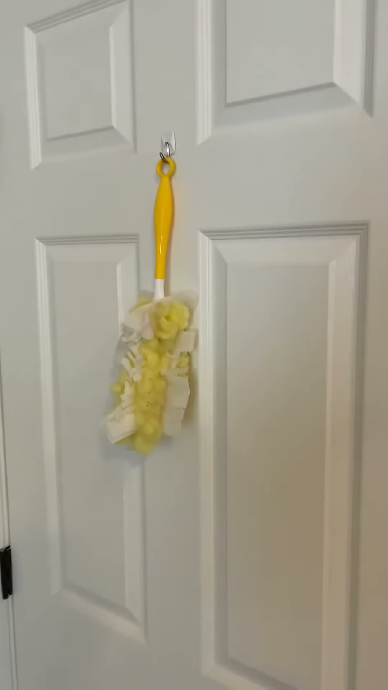
1먼지를 털어 날리지 않고 헤드에 붙잡아요, 다 쓴 헤드는 빼서 버리면 끝
손잡이 30cm + 리필 5p · 1세트
국내배송 · 구매 옵션 확인
손잡이 30cm 1개와 리필 헤드 5개 구성이에요. 리필은 일회용이라 빨아 쓰는 제품이 아니에요.
최종 가격·구성·배송·재고는 쿠팡 구매 화면에서 확인해 주세요.
영상 속 제품이에요.
선이 없어서 트리 앞, 큰 상자 위 어디서든 바로 짜서 붙여요
글루건 + 스틱 10p 세트 · 1개
국내배송 · 구매 옵션 확인
글루건 본체와 글루스틱 10개 세트예요. 스틱 색상 구성은 구매 화면에서 확인해 주세요. 노즐과 녹은 글루는 뜨거우니 사용할 때 조심해 주세요.
영상 속 펠트·장식·상자는 포함되지 않아요. 최종 가격·구성·배송·재고는 쿠팡 구매 화면에서 확인해 주세요.
영상 속 제품이에요.
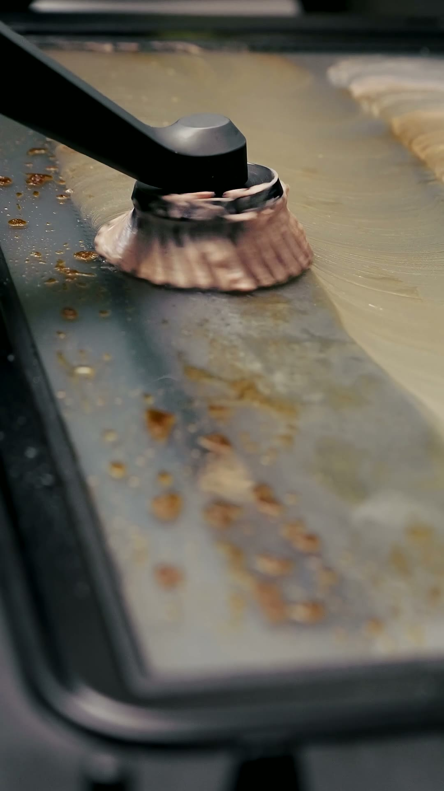
1대고만 있으면 브러시가 돌면서 닦고, 자석 헤드를 바꿔 배수구·수전 틈새까지
그레이 · 1개
국내배송 · 구매 옵션 확인
HOTO Wand 전동 청소솔 그레이예요. 영상에 나온 브러시 헤드가 모두 기본 구성에 들어 있는지는 구매 화면에서 확인해 주세요. 닦을 표면의 재질과 사용 안내도 확인해 주세요.
영상 속 세제·청소 도구는 포함되지 않아요. 최종 가격·구성·배송·재고는 쿠팡 구매 화면에서 확인해 주세요.
영상 속 제품이에요.
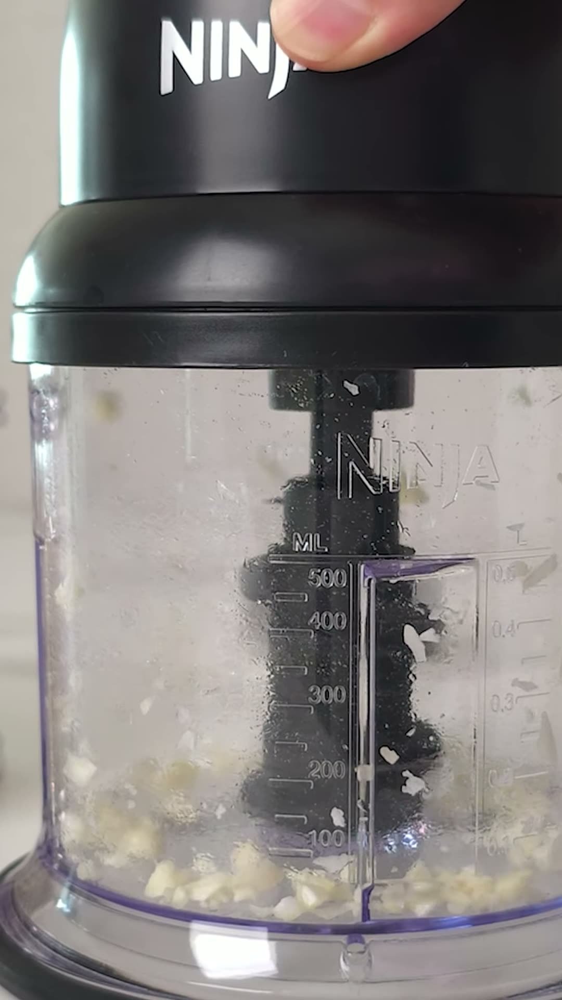
1버튼 한 번에 마늘·고기·얼음까지 다져요, 칼날이 빠져 설거지가 쉬워요
NJ1001KR · 블랙
국내배송 · 구매 옵션 확인
NJ1001KR 모델이에요. 칼날은 날카로우니 분리·세척할 때 조심해 주세요. 식기세척기 사용 가능 부품은 설명서를 확인해 주세요.
영상 속 식재료는 포함되지 않아요. 최종 가격·구성·배송·재고는 쿠팡 구매 화면에서 확인해 주세요.
영상 속 제품이에요.
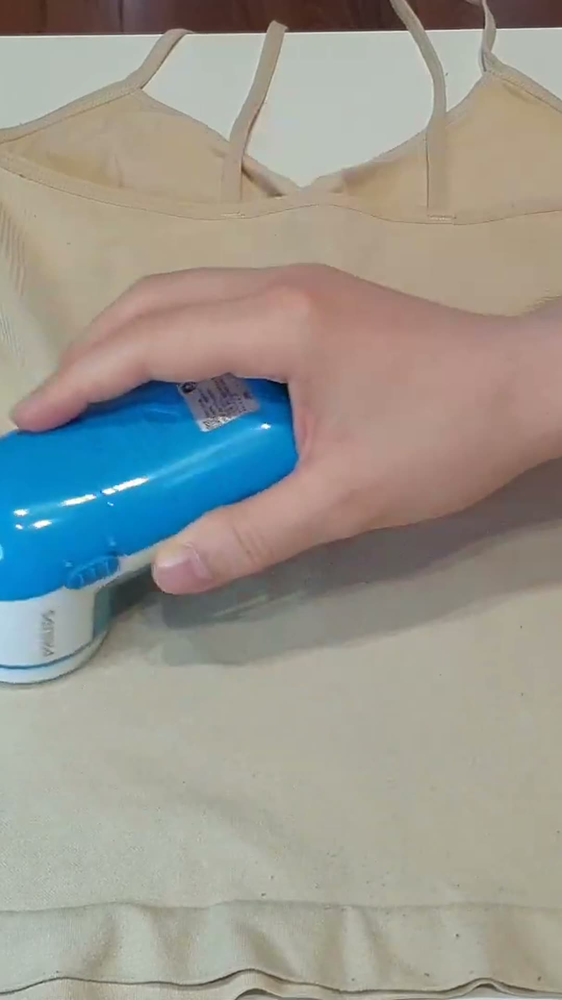
1쓱 밀면 보풀이 통 안에 모여요, 건전지식이라 선이 없어요
GC026 · 건전지식(AA 2개) · 색상은 구매 화면에서 확인
국내배송 · 구매 옵션 확인
GC026 건전지식 모델이에요. 건전지 포함 여부와 색상은 구매 화면에서 확인해 주세요. 영상 속 옷은 포함되지 않아요.
최종 가격·구성·배송·재고는 쿠팡 구매 화면에서 확인해 주세요.
영상 속 1번·2번·3번 순서예요.
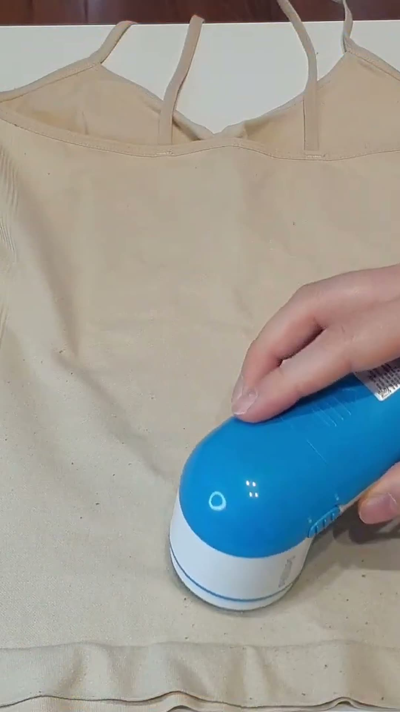
1니트에 쓱 밀어주면 보풀이 통 안에 모여요
GC026 · 건전지식 · 색상은 구매 화면에서 확인
국내배송 · 구매 옵션 확인
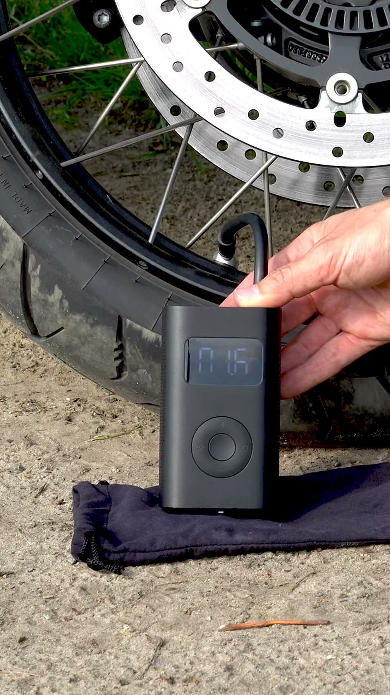
2압력을 맞춰두면 알아서 채우고 멈춰요
1S · 블랙 · 124×71×45.3mm
판매자별 배송 · 구매 옵션 확인
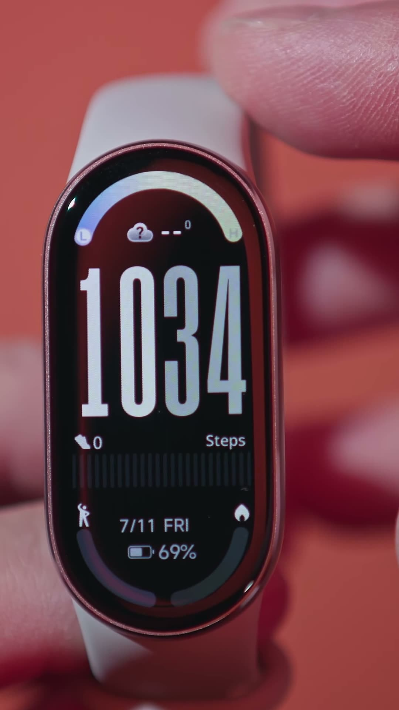
3화면이 크고 선명해서 시계 대신 쓰기 좋아요
글레이시어 실버 · 블루투스
국내배송 · 구매 옵션 확인
1번은 GC026 건전지식 모델이에요. 2번은 에어펌프 1S이며 에어펌프 2와 다른 모델이에요. 판매자에 따라 대표 사진이 케이스로 보일 수 있으니 옵션명(에어펌프 1S)을 확인해 주세요. 3번은 스마트밴드10 글레이시어 실버이며 다른 색상은 구매 화면에서 골라 주세요.
영상 속 옷·타이어·휴대폰은 포함되지 않아요. 최종 가격·구성·배송·재고는 쿠팡 구매 화면에서 확인해 주세요.
영상 속 제품이에요.
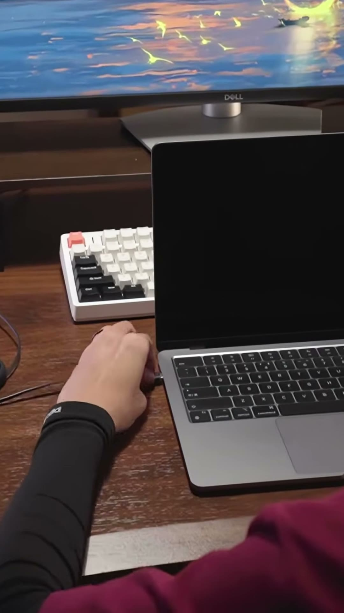
1쓸 만큼만 쭉 당겨 쓰고, 양쪽 다 늘어나요
C타입-C타입 · 1m · 100W · 색상 4종
국내배송 · 구매 옵션 확인
C타입-C타입 1m 100W 모델이에요. 색상(클러스터 블랙·네불라 퍼플·문화이트·갤럭시 블루)은 구매 화면에서 골라 주세요. 영상 속 폰·아이패드·노트북·충전기는 포함되지 않아요.
최종 가격·구성·배송·재고는 쿠팡 구매 화면에서 확인해 주세요.
영상 속 제품이에요.
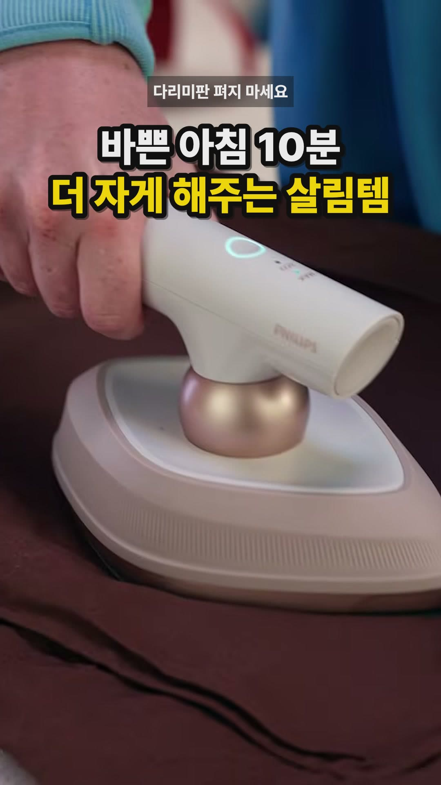
1눕히면 다리미, 세우면 스티머로 써요
GC215/20 · 블루 · 거치대 + 추가 물통 300ml + 소프트 보드
국내배송 · 로켓배송
연결 상품은 소프트 보드가 들어 있는 GC215 블루예요. 영상 속 흰색·테라코타는 GC213 모델로, 소프트 보드가 포함되지 않아요. 유선 제품이에요.
영상 속 옷과 옷걸이는 포함되지 않아요. 최종 구성·가격·배송·재고는 쿠팡 구매 화면에서 확인해 주세요.
영상 속 1번·2번·3번 순서예요
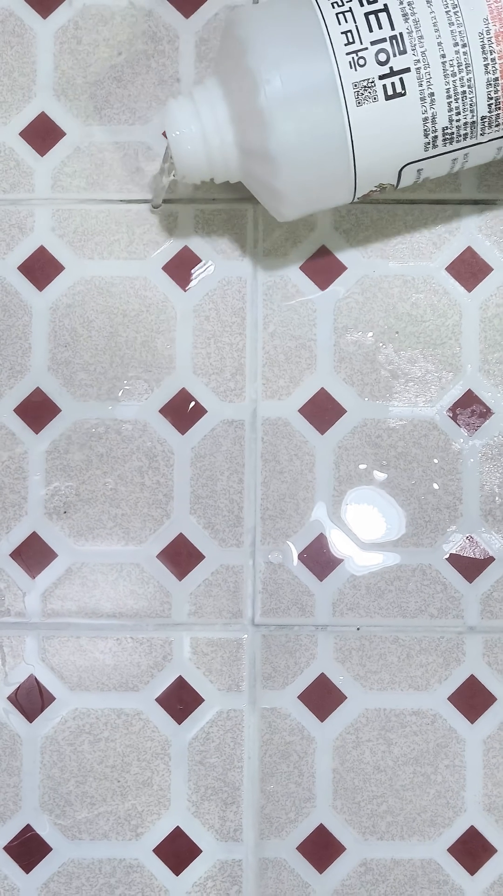
1타일에 바르고 솔로 문질러 청소
1L, 1개
국내배송 · 현재 옵션·배송은 구매 화면 확인
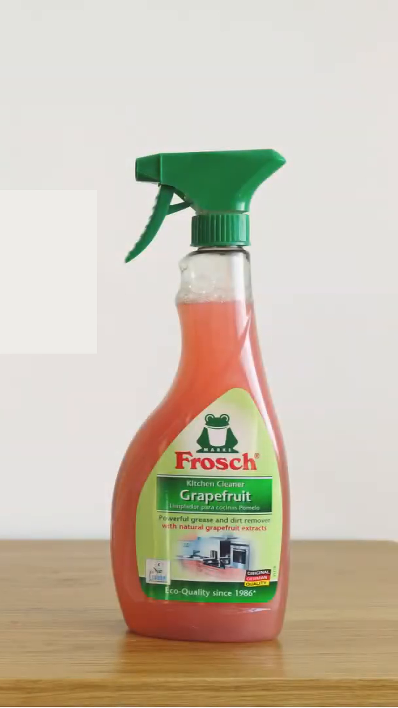
2인덕션·주방 후드의 기름때 청소
500ml, 1개
국내배송 · 현재 옵션·배송은 구매 화면 확인
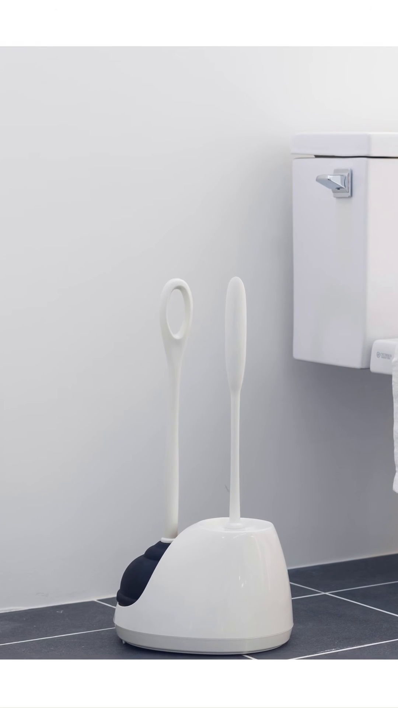
3변기솔·뚫어뻥을 꺼내 쓰고 함께 보관
혼합색상, 1세트
국내배송 · 현재 옵션·배송은 구매 화면 확인
타일 세정제는 백시멘트 줄눈·금속 등 사용 제한을 확인하고 다른 세제와 섞지 마세요. 충분히 헹궈주세요. 프로쉬는 제품 안내의 반응시간을 지켜 사용하세요. 포장은 리뉴얼에 따라 영상과 다를 수 있어요. 변기클리너는 혼합색상 1세트 옵션이며, 최종 가격·구성·배송은 구매 화면에서 확인해 주세요.
영상 속 1번·2번 순서예요
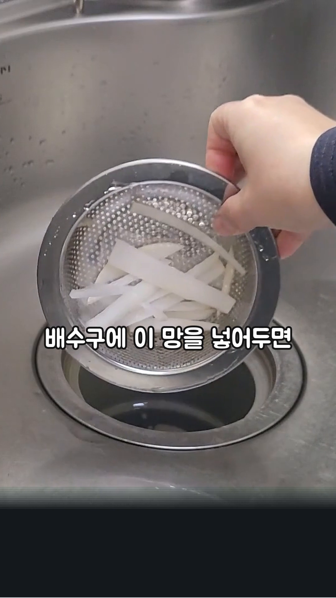
1손잡이로 쏙 꺼내는 거름망과 물이 내려가는 덮개
커버·거름망 세트 · 단색 · 1개 · 배수구 크기 확인
국내배송 · 구매 화면에서 옵션 확인
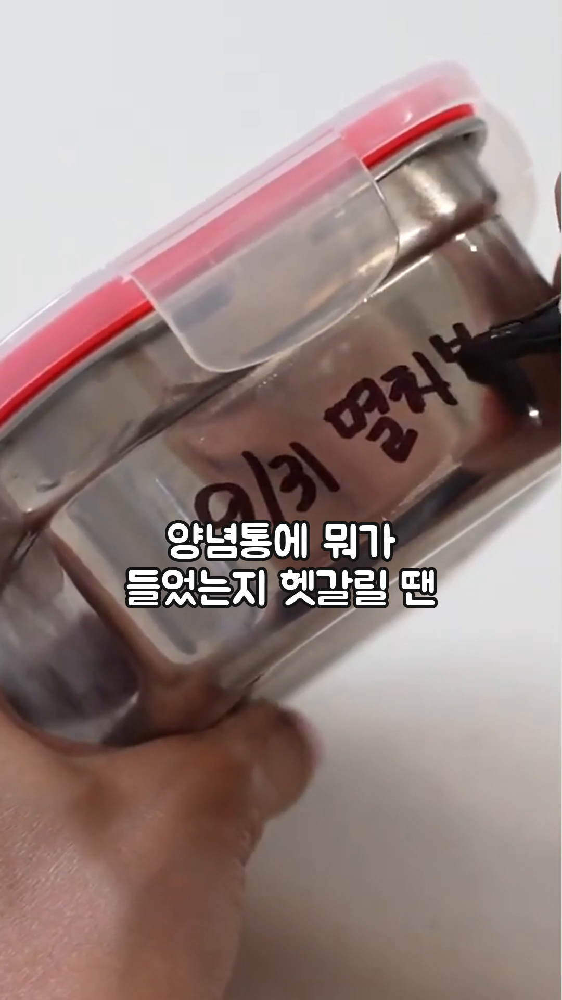
2양념통에 바로 쓰고 수세미로 지워 다시 써요
검정 · 2개 · 표면별 사용 조건 확인
국내배송 · 구매 화면에서 옵션 확인
1번은 설치할 배수구 크기를, 2번은 사용할 표면과 제품의 지우기 조건을 확인해 주세요. 영상 속 양념통은 포함되지 않아요. 최종 가격·구성·배송은 쿠팡 상품 화면에서 확인해 주세요.
영상 속 1번·2번·3번 순서예요.
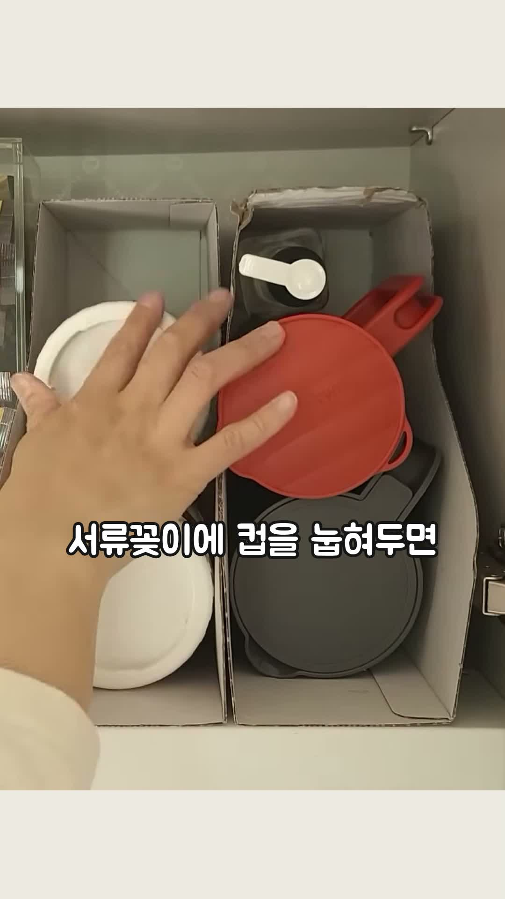
1컵을 눕혀 두면 안쪽 컵까지 한눈에 보기 편해요
화이트 · 4개 구성
국내배송 · 착불 배송비 확인
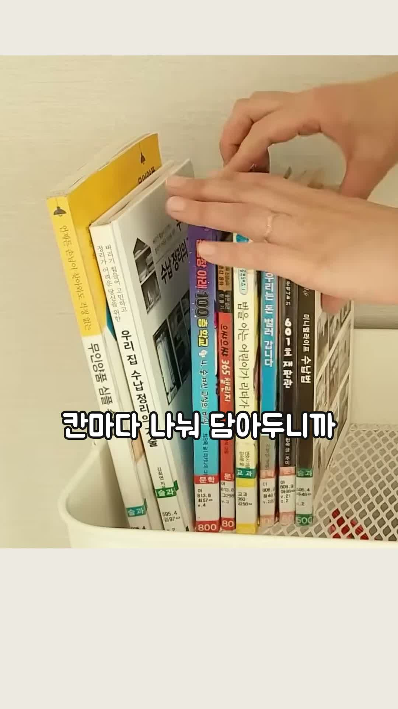
2수건이나 책을 칸마다 나눠 담고 필요한 곳으로 굴려 쓰세요
화이트 · 35×45×78cm · 3단 · 1개
국내배송 · 착불 배송비 확인
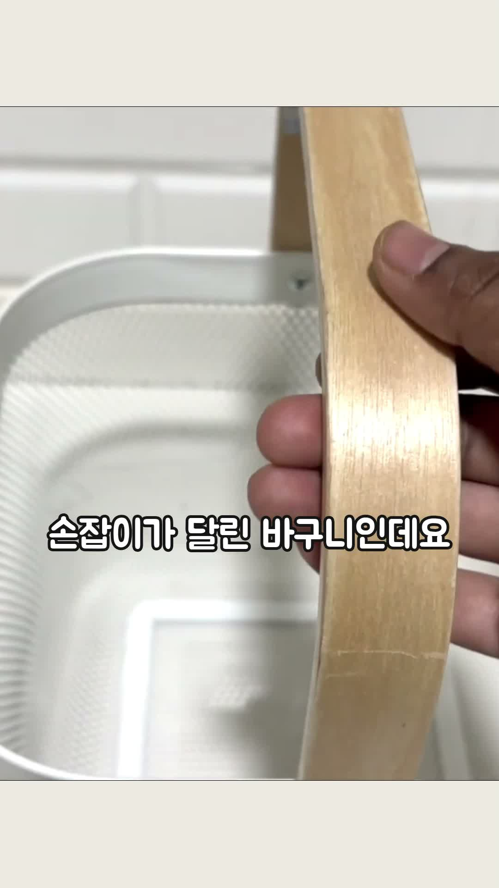
3안에 든 게 잘 보이고 손잡이를 잡아 옮기기 좋아요
화이트 · 1개
국내배송 · 착불 배송비 확인
1번은 서류꽂이 4개 구성이며 컵은 포함되지 않아요. 물에 젖지 않게 사용해 주세요. 2번은 화이트 3단 카트 1개이며 높이 78cm 모델이에요. 설치할 공간과 최종 규격을 확인해 주세요. 3번은 화이트 바구니 1개이며 영상 속 식재료와 그릇은 포함되지 않아요.
같은 상품명이어도 옵션과 구성은 다를 수 있어요. 가격·재고·배송비·최종 옵션은 쿠팡 구매 화면에서 확인해 주세요.
영상 속 1번·2번·3번 순서예요.
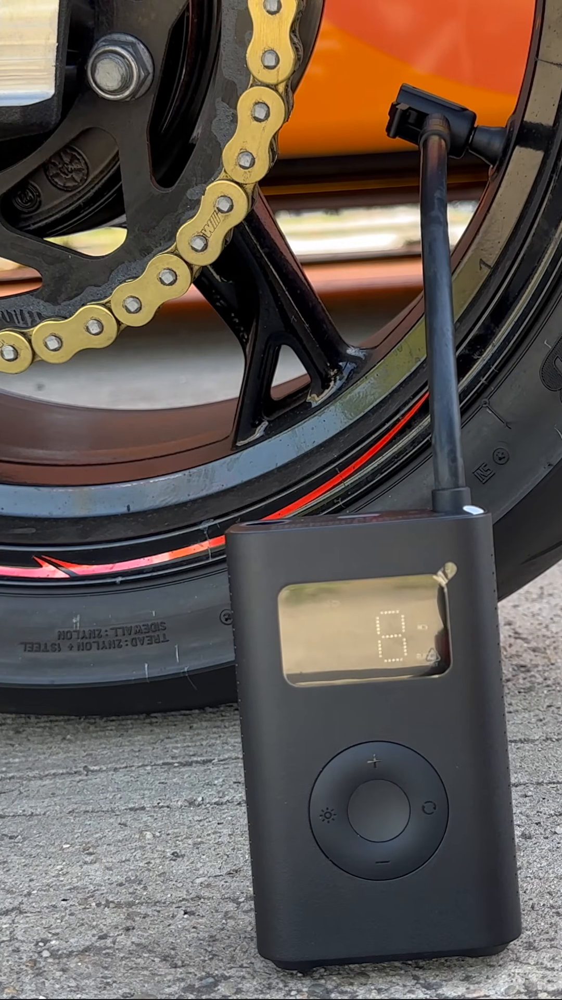
1버튼으로 공기를 넣고, 설정한 압력에서 자동으로 멈춰요
MJCQB06QW · 블랙 · 1개
국내배송 · 구매 옵션 확인
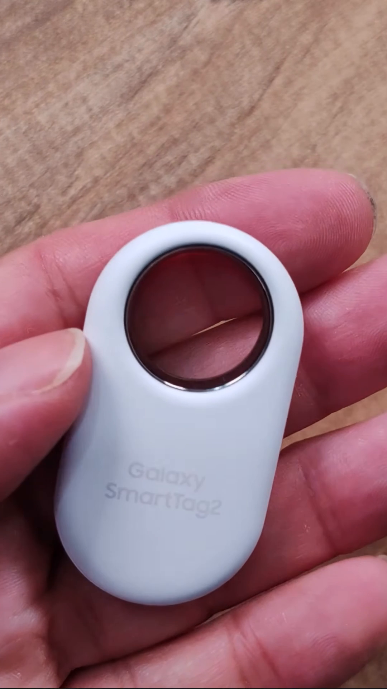
2갤럭시 앱에서 소리를 울리거나 위치를 확인해요
EI-T5600 · 화이트 · 1개 · 갤럭시 호환 확인
국내배송 · 구매 옵션 확인
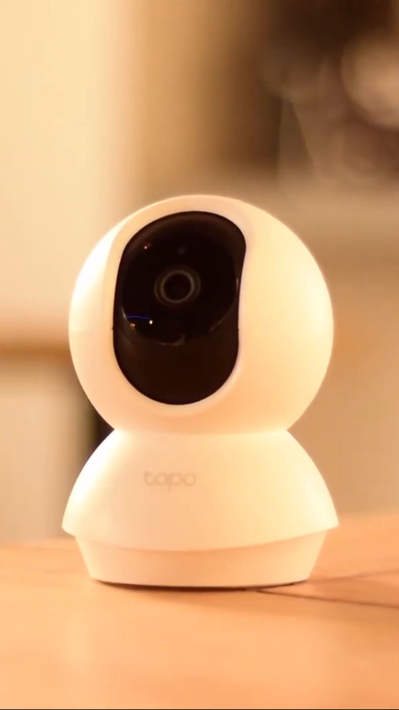
3휴대폰으로 집 안을 확인하고 카메라 방향도 돌려요
C200 · 화이트 · 1개 · 전원·Wi-Fi 연결 필요
국내배송 · 구매 옵션 확인
1번은 에어펌프 2 모델이며, 타이어에 맞는 밸브와 권장 공기압을 확인해 주세요. 2번은 호환되는 갤럭시 기기와 SmartThings 앱이 필요해요. 위치 확인은 주변 기기와 연결 환경에 따라 달라질 수 있어요. 3번은 실내용 C200이며 전원과 Wi-Fi에 연결해 사용해요.
영상 속 타이어·열쇠·휴대폰은 포함되지 않아요. 최종 구성·가격·배송·재고는 쿠팡 구매 화면에서 확인해 주세요.
영상 속 1번·2번·3번 순서예요.
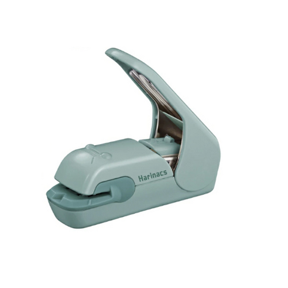
1철심 없이 꾹 눌러 종이를 묶어요
블루그린 1개 · 영상은 같은 모델의 흰색
국내배송 · 구매 옵션 확인
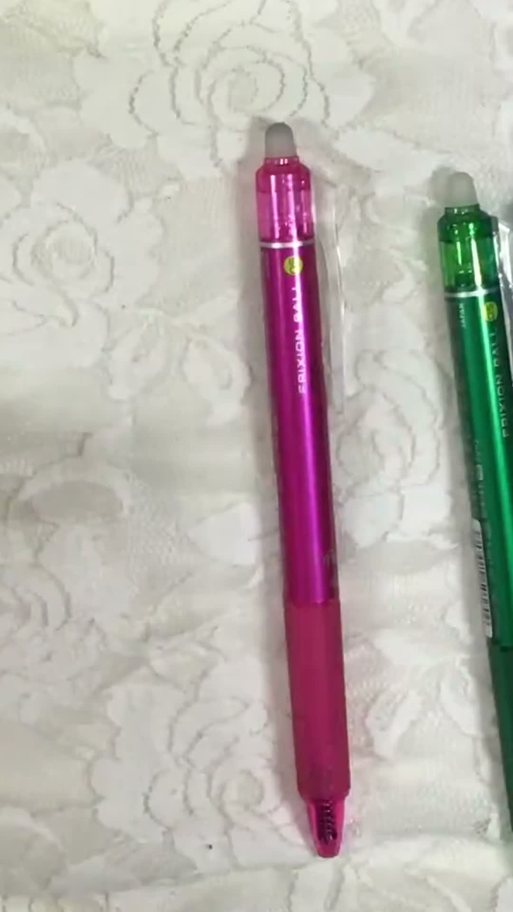
2잘못 쓴 글씨는 펜 뒤쪽 고무로 문질러 지워요
핑크 3개입 · 중요 문서·서명에는 사용 금지
국내배송 · 구매 옵션 확인
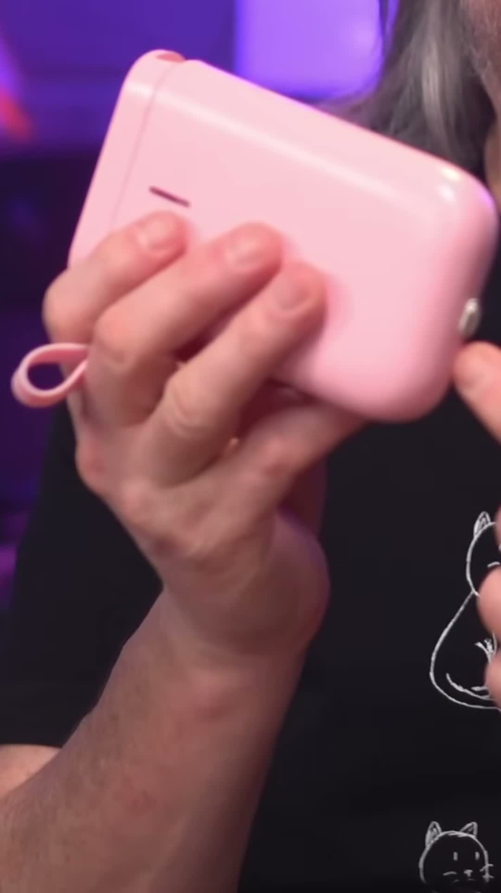
3휴대폰으로 이름표를 만들어 출력해요
핑크 본체 + 기본 12×40mm 라벨 · 전선용 라벨 별도
국내배송 · 구매 옵션 확인
1번은 영상 속 흰색과 색상이 다른 블루그린 PRESS 5 모델이에요. 2번 프릭션은 열에 의해 글씨가 사라질 수 있어 중요 문서·서명에는 쓰지 마세요. 3번 기본 구성의 라벨과 영상 속 전선용 라벨은 달라요. 전선용 라벨은 별도 구매가 필요해요.
가격·배송·구성과 재고는 실제 구매 화면에서 확인해 주세요.
영상 속 1번·2번·3번 순서예요.
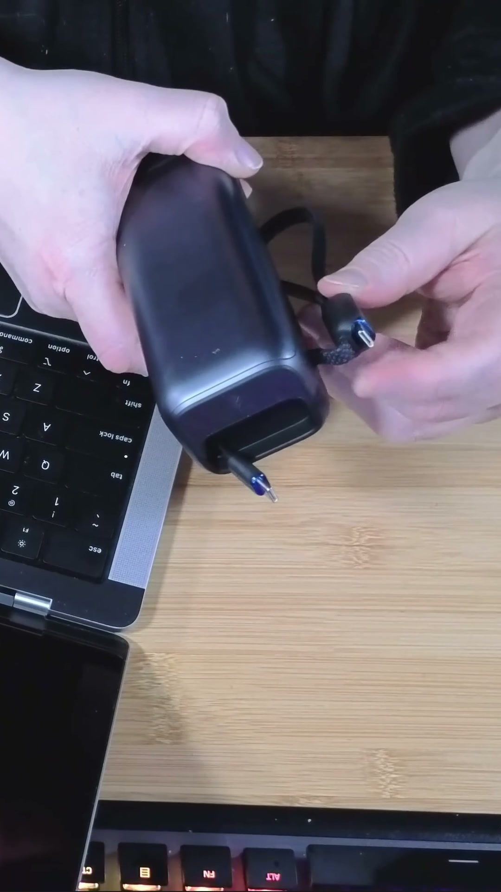
1내장 USB-C 선으로 충전하고, 표시창에서 잔량을 확인해요
A1695 블랙 25000mAh 165W 1개
국내배송 · 구매 옵션 확인
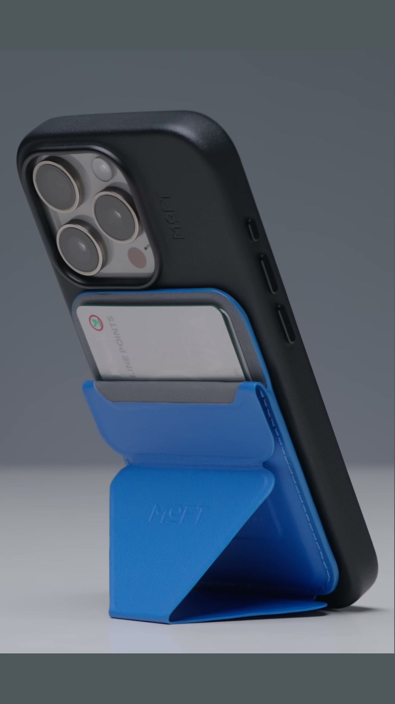
2폰 뒤에 카드를 챙기고, 펼쳐 거치대로도 써요
MOVAS 사파이어 1개
국내배송 · 구매 옵션 확인
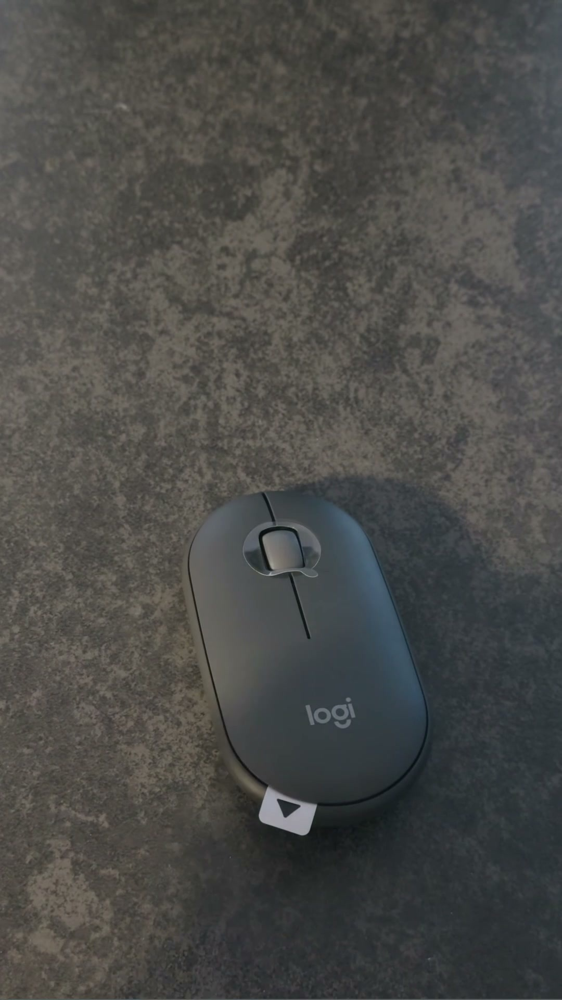
3납작한 무선 마우스예요. 바닥 버튼으로 연결 기기를 바꿔요
Pebble M350S 블랙 1개
국내배송 · 구매 옵션 확인
1번은 A1695 블랙 25000mAh 모델이에요. 노트북의 USB-C PD 충전 지원 여부를 확인해 주세요. 2번은 MOVAS 사파이어 카드지갑이며 맥세이프 지원 폰이나 케이스가 필요해요. 3번은 M350S 블랙이에요. M350과 모델명이 달라요.
영상 속 폰·노트북·카드는 포함되지 않아요. 구성·호환·가격·배송·재고는 쿠팡 구매 화면에서 확인해 주세요.
영상 속 1번·2번·3번 순서예요.
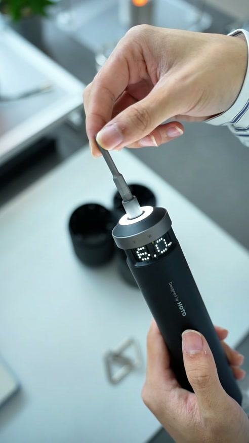
1버튼으로 나사를 돌리고, 힘을 조절해요. 교체팁은 케이스에 모아 둬요
QWLSD014 PixelDrive 본체+30개 교체팁+3단 케이스 1개
해외배송 · 구매 옵션 확인
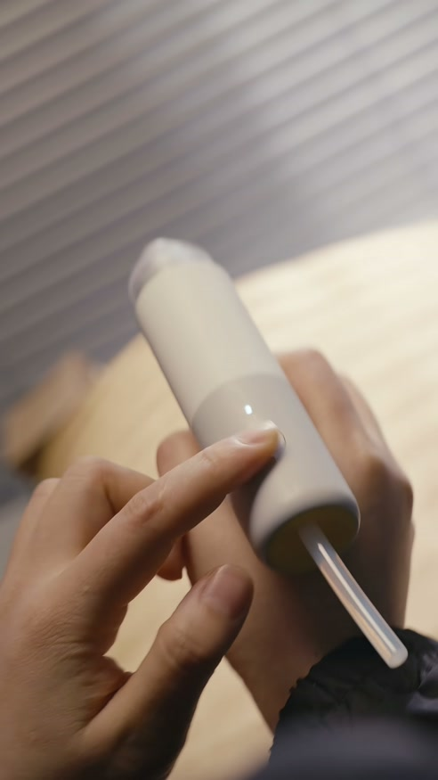
2종이 포장과 리본 장식에 쓰는 기본형 무선 글루건이에요
QWRJQ001 흰색 무선 글루건+스틱10p 1세트
국내배송 · 구매 옵션 확인
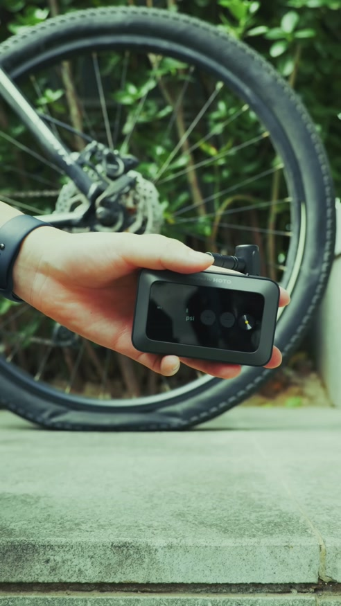
3공과 자전거 타이어에 공기를 넣고, 호스는 본체에 접어 둬요
QWCQA002 Air Pump Pocket 1개
해외배송 · 구매 옵션 확인
1번은 QWLSD014 PixelDrive 본체·교체팁 30개·케이스 세트예요. 2번은 QWRJQ001 기본형이며 Easyflow와 달라요. 3번은 QWCQA002 포켓 모델이에요. 자전거 밸브에 맞는 어댑터가 별도로 필요할 수 있으니 바늘·어댑터 구성과 사용 조건을 확인해 주세요.
1번·3번은 해외배송 옵션이에요. 배송 기간과 반품 조건을 확인해 주세요. 최종 옵션·가격·재고는 쿠팡 구매 화면에서 확인할 수 있어요.
영상 속 1번·2번 순서로 찾을 수 있어요.
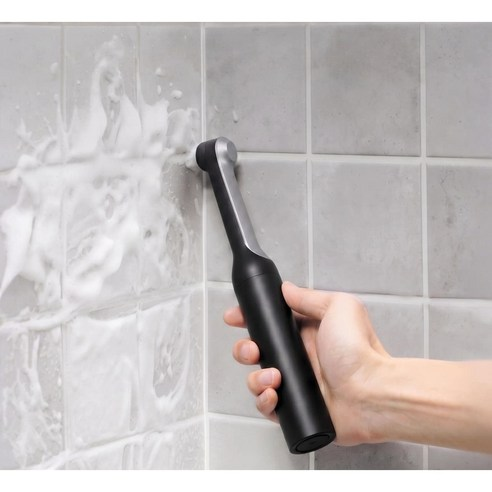
1돌아가는 솔로 수도꼭지 주변부터 운동화 밑창까지 닦아요
그레이 · 1개
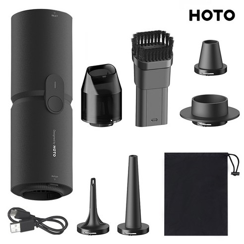
2부스러기는 빨아들이고 키보드 틈새는 바람으로 털어내요
에어캡슐 기본 모델 · 1개
1번은 HOTO Wand 청소솔이에요. 브러시 구성과 닦을 표면의 사용 안내를 확인해 주세요. 2번은 HOTO 에어캡슐이며 BlowVac 모델과 달라요. 흡입과 바람 기능은 용도에 맞는 노즐을 바꿔 사용해요.
최종 옵션·가격·재고·배송 조건은 쿠팡 구매 화면에서 확인해 주세요.
영상 속 1번부터 3번까지 순서대로 찾을 수 있어요.
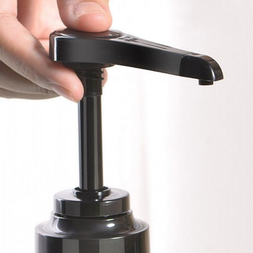
1병을 뒤집지 않고 눌러서 덜어 쓰고, 윗부분을 돌려 잠가요
펌프 1개 · 병 입구 호환 확인
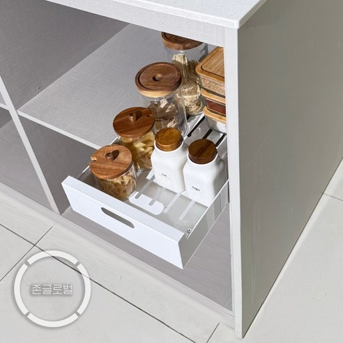
2앞으로 당겨 안쪽 양념병까지 꺼내요
화이트 · 소 43×25×8cm · 1개
숟가락 대신 눌러 꿀을 짜고, 뚜껑을 닫아 보관해요
360ml · 2개 구성
1번 펌프는 병 입구 호환 여부를 확인해 주세요. 2번은 소 사이즈이니 수납장 안쪽 폭·깊이·높이를 먼저 확인해 주세요. 3번은 소스통 2개 구성이며 꿀은 포함되지 않아요.
병과 식재료는 구성품이 아니에요. 최종 옵션과 배송 조건은 쿠팡 구매 화면에서 확인해 주세요.
영상 속 1번부터 3번까지 순서대로 찾을 수 있어요.
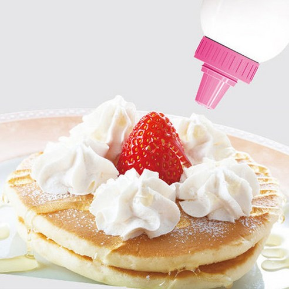
1흔들어 만든 생크림을 팬케이크와 커피 위에
1개 · 흰색 본체/분홍 캡
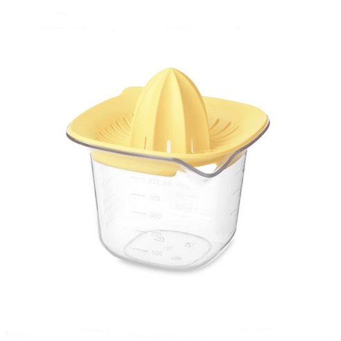
2레몬을 짜고, 계량컵으로 바로 따라요
500ml · 바닐라 옐로우 · 1개
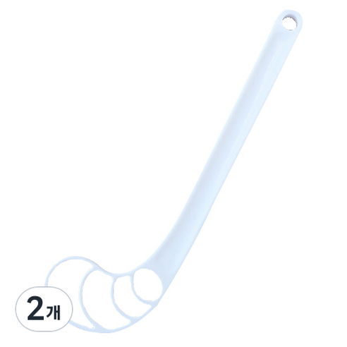
3달걀말이와 베이킹에 넣을 달걀물 준비
2개 구성
생크림 메이커는 지방 함량 45% 생크림을 권장하며 3~5분 흔들어 사용하는 제품입니다. 레몬짜개는 수동 제품이며, 영상과 현재 판매 옵션의 노란색 톤에 차이가 있을 수 있어요. 3번 달걀 도구는 2개 구성이고 뜨거운 팬에서는 사용하지 마세요.
식재료와 그릇은 포함되지 않아요. 최종 옵션과 배송 조건은 쿠팡 구매 화면에서 확인해 주세요.
영상 속 1번부터 3번까지 순서대로 찾을 수 있어요.
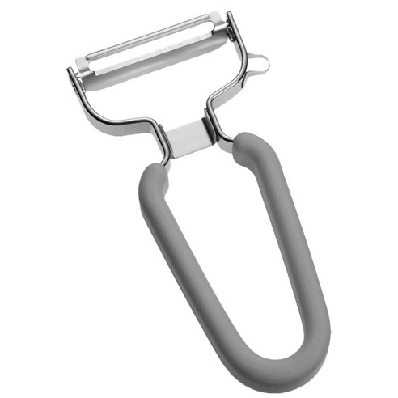
1껍질 벗기기부터 양배추 채썰기까지
그레이 · 1개
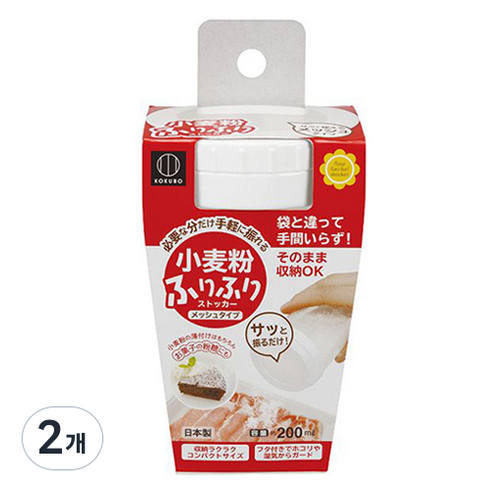
2고기에 밀가루, 케이크엔 슈가파우더
200ml · 2개
견과를 부수면서 음식 위에 바로 뿌려요
그린 · 2개
2번 가루통과 3번 견과류 분쇄기 링크는 각각 2개 구성입니다. 가루통은 밀폐용기가 아니므로 가루를 오래 보관하는 용도로 쓰지 마세요. 견과류 분쇄기는 손으로 누르며 비트는 제품으로 힘이 필요할 수 있어요.
사진 속 식재료와 그릇은 포함되지 않아요. 최종 옵션과 배송 조건은 쿠팡 구매 화면에서 확인해 주세요.
영상 속 1번부터 4번까지 순서대로 찾을 수 있어요.
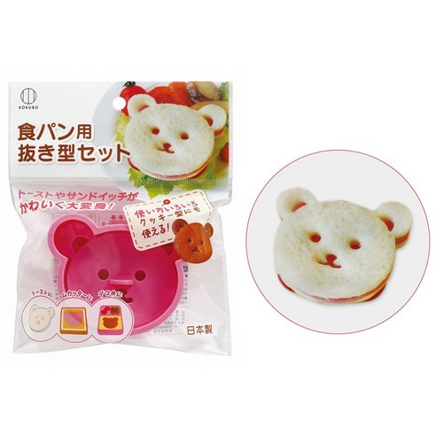
1식빵에 얼굴까지 찍고, 쿠키·치즈도 곰돌이 모양으로
곰돌이형 · 핑크 · 1개
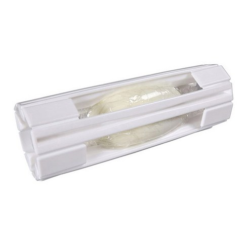
2삶은 계란을 굴려 꽃 모양·지그재그 모양으로
KK548 · 물결/지그재그 막대 · 1개
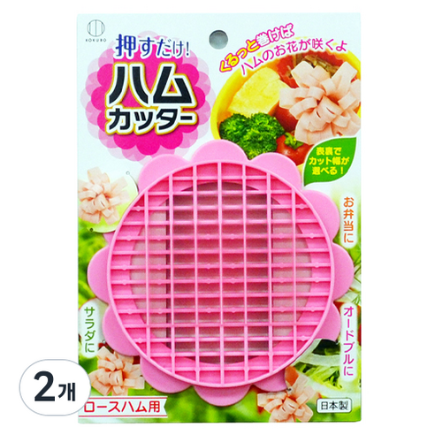
3얇은 햄에 칼집을 내고 돌돌 말아 꽃처럼
KK252 · 핑크 · 2개
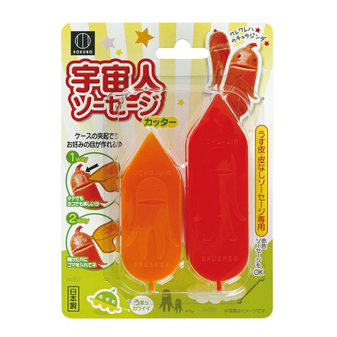
4칼집과 눈 모양을 찍고 구우면 다리가 펼쳐져요
KK254 · 주황/빨강 2종 틀 · 1세트
1번은 식빵 모양틀과 얼굴 찍는 판이 함께 들어 있어요. 2번은 삶은 계란을 자르는 도구이며, 물결·지그재그 막대 구성입니다. 3번은 핑크 2개 구성으로 얇은 햄에 사용해요. 4번은 미니·일반 소시지에 맞는 두 가지 틀이 들어 있어요.
도구에 맞는 식재료 크기와 두께, 최종 옵션은 쿠팡 구매 화면에서 확인해 주세요. 사진 속 식재료는 포함되지 않아요.
영상 속 1번부터 5번까지 순서대로 찾을 수 있어요.
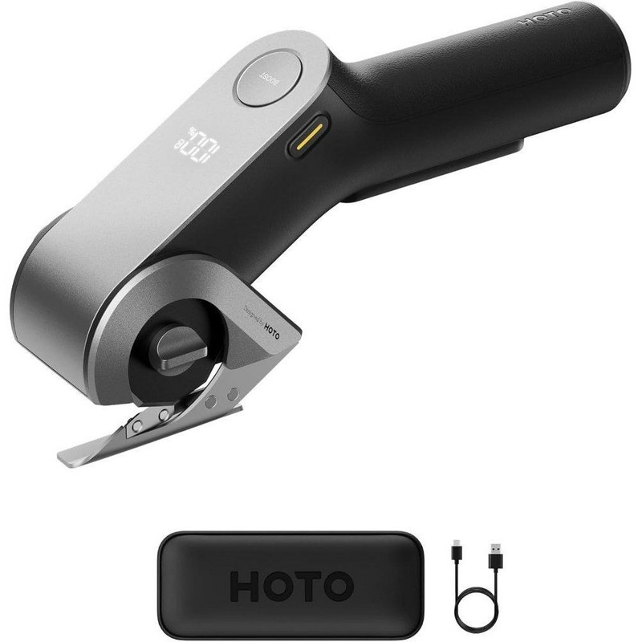
1상자·펠트·단단한 포장을 버튼으로 잘라요.
QWJDA001 · 본체 1개
도착 예정일과 반품비는 쿠팡 구매 화면에서 확인해 주세요.
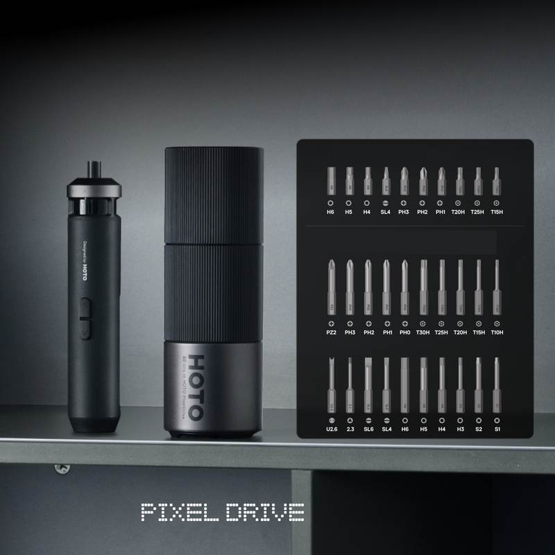
2나사를 조이는 힘을 조절하고, 비트 30개를 골라 써요.
QWLSD014 · 비트 30개 세트
도착 예정일과 반품비는 쿠팡 구매 화면에서 확인해 주세요.
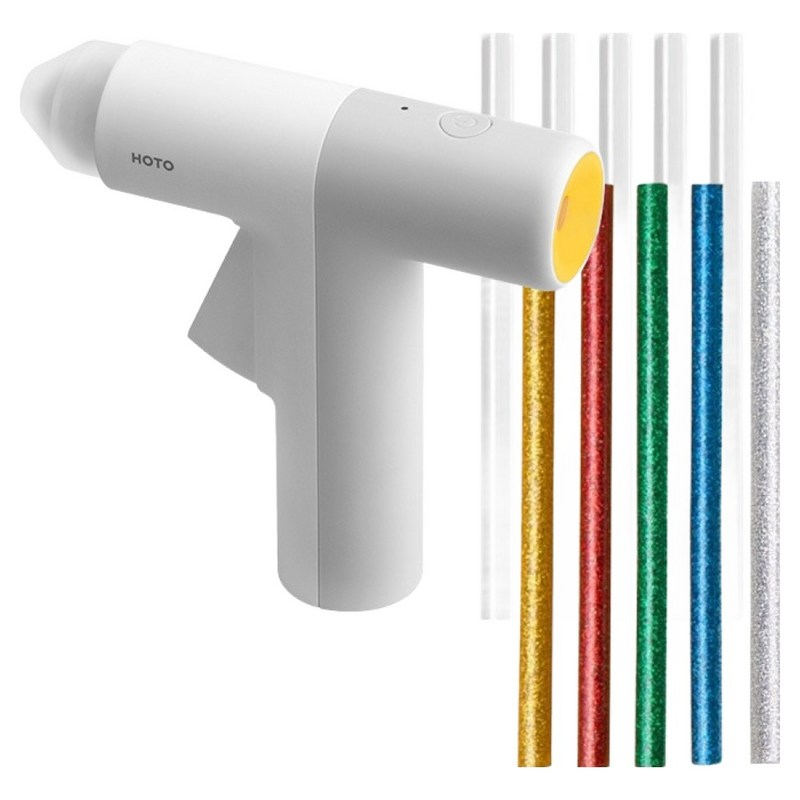
3선물 포장 장식을 붙이고, 글루로 폰 케이스도 만들어요.
QWRJQ001 · 글루스틱 10개 포함
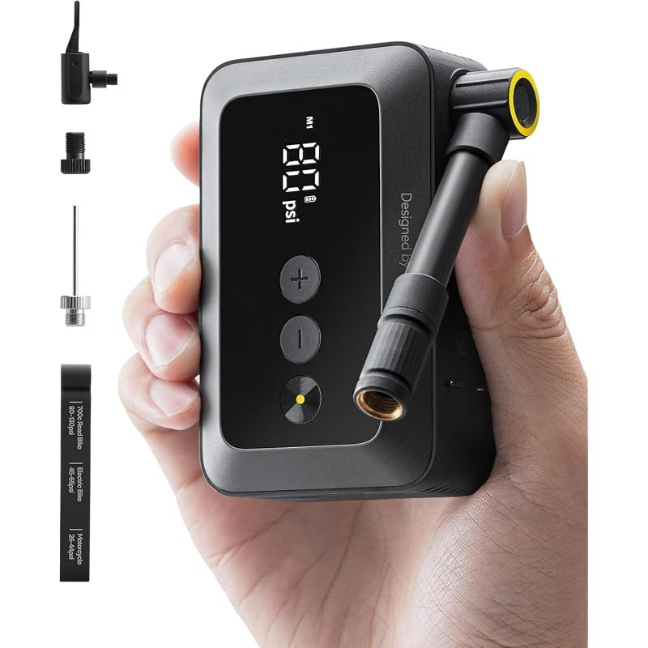
4공과 자전거 타이어에 바람을 넣고, 호스는 접어 넣어요.
QWCQA002 · 검정색 · 본체 1개
도착 예정일과 반품비는 쿠팡 구매 화면에서 확인해 주세요.
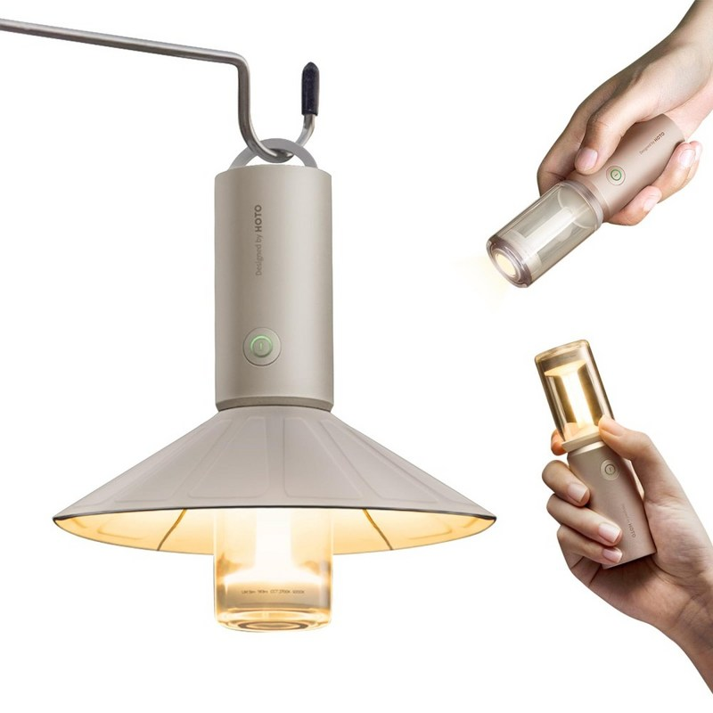
5밝기를 조절하고, 갓을 끼우거나 걸어서 써요.
QWLYD001 · 본체 1개
도착 예정일과 반품비는 쿠팡 구매 화면에서 확인해 주세요.
영상 속 1번과 2번 순서예요.
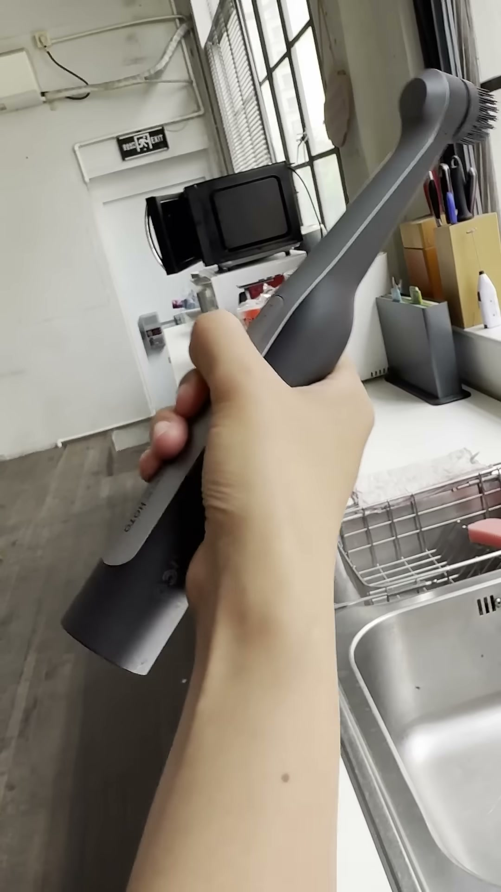
1계속 비비지 않고, 돌아가는 솔로 닦아요.
그레이 · 본체 + 헤드 5종 · 1세트
해외배송 · 배송·반품 조건을 확인해 주세요.
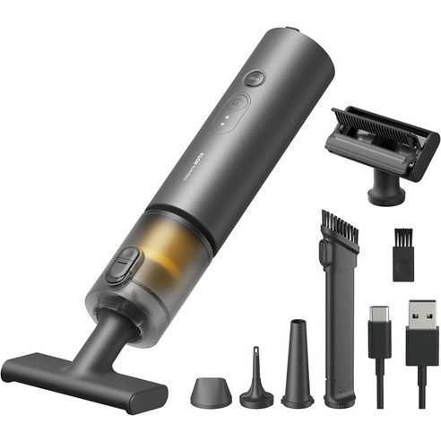
2먼지는 빨아들이고, 반대쪽 노즐로 낙엽을 날려요.
그레이 · 버튼 2개 · 투명 먼지통
해외배송 · 배송·반품 조건을 확인해 주세요.
1번은 헤드 5종이 포함된 Wand 옵션이에요. 영상처럼 헤드를 바꿔 사용하며, 닦을 표면에 맞는 헤드를 확인해 주세요. 2번은 AutoCare 20000으로, 다른 Air Capsule·BlowVac 모델과 구분해 주세요.
가격·재고·구성품과 해외배송·반품 조건은 쿠팡 구매 화면에서 확인해 주세요.
주방 정리템 2가지 · 영상 속 1번과 2번 순서예요.
빈 통도 뚜껑도 겹쳐 한 세트로 모아요.
멀티컬러 · 5통 + 5뚜껑
색별로 꺼내 쓰고, 각각 꽂아 보관해요.
실버 · 라지 · 4색 도마 + 케이스
1번은 크기가 다른 용기 5개와 뚜껑 5개가 함께 들어 있는 구성이에요. 2번은 칼이 포함되지 않은 실버 라지 도마 4종과 케이스예요.
가격·재고·배송비·최종 옵션은 쿠팡 구매 화면에서 확인해 주세요. 사진 속 식재료는 포함되지 않아요.
영상 속 1번·2번·3번 순서예요.
마늘을 넣고 비틀어 으깨요.
그린 · 1개
반 자른 레몬을 넣어 즙을 짜요.
옐로우 · 9.4×9.1×24.5cm · 1개
삶은 감자를 가늘게 으깨요.
화이트/그레이 · 26.5×9.1×9.4cm · 단품 1개
세 제품 모두 양손으로 손잡이를 비트는 도구예요. 2번은 반으로 자른 레몬, 3번은 충분히 익힌 감자를 사용해요. 식재료와 그릇은 포함되지 않아요.
가격·재고·배송비·최종 옵션은 쿠팡 구매 화면에서 확인해 주세요.
영상 속 1번과 2번 순서예요.
썬 재료가 받침통에 바로 모여요.
제이드그린 · 22×11×10.5cm · 5종 세트
씻은 채소의 물기를 빼고, 바깥 통은 샐러드 그릇으로 써요.
제이드그린 · 25×25×16cm · 1개
1번은 날을 바꿔 써는 채칼 세트예요. 손 보호 홀더와 제품별 사용법을 확인해 주세요. 2번은 손으로 손잡이를 돌리는 제품이며 전동식이 아니에요. 채소·치즈·식기는 포함되지 않아요.
가격·재고·배송비·최종 옵션은 쿠팡 구매 화면에서 확인해 주세요.
영상 속 1번과 2번 순서예요.
양념을 담고, 서랍 안에 나란히 정리해요.
다크그레이 · 0.7L · 1개
씻은 뒤 흡착 거치대에 걸어둬요.
제이드그린 · 1개 · 흡착 거치대 포함
1번의 연결 옵션은 용기 한 개예요. 영상처럼 여러 개를 정리하려면 필요한 수량을 확인해 주세요. 2번의 흡착 거치대는 붙일 면의 재질과 사용 조건을 확인해 주세요.
가격·재고·배송비·최종 옵션은 쿠팡 구매 화면에서 확인해 주세요.
영상 속 1번과 2번 순서예요.
뚜껑의 마개를 분리해 따로 씻을 수 있어요.
그레이 · 350ml · 3개
함께 들어 있는 스펀지로 도마에 왁스를 발라요.
1개 · 스펀지 포함
1번은 350ml 용기 세 개 구성이에요. 2번은 도마 관리용 왁스이며, 도마와의 사용 적합성과 관리 방법을 확인해 주세요. 도마·식기는 포함되지 않아요.
가격·재고·배송비·최종 옵션은 쿠팡 구매 화면에서 확인해 주세요.
영상 속 1번과 2번 순서예요.
밥을 푼 뒤, 받침 없이 세워둬요.
화이트 · 1개
재료를 넣고 윗부분을 눌러 다져요.
NJ1001KR · 1개
2번은 NJ1001KR 초퍼예요. 다른 모델과 구성이 다를 수 있어요. 제품별 용량·재료·사용법을 확인해 주세요.
가격·재고·배송비·최종 옵션은 쿠팡 구매 화면에서 확인해 주세요.
영상 속 1번과 2번 순서예요.
선반에 끼워 컵을 담고, 아래 공간도 써요.
화이트 · 22×26×19cm · 1개
길이를 늘려, 뚜껑이나 쟁반을 세워둬요.
스테인리스 STEEL · 1개 · 401.640.75
1번은 32cm 걸이식 진열대와 다른 바구니예요. 선반 두께 16–20mm·최대 하중 1.5kg와 판매자의 착불 배송비를 확인해 주세요. 컵·쟁반은 포함되지 않아요.
가격·재고·배송비·최종 옵션은 쿠팡 구매 화면에서 확인해 주세요.
영상 속 1번 · 2번 순서예요.
선반에 끼워 키친타월이나 와인잔을 걸어요.
화이트 · 32×7cm · 1개
물건을 모아두고 바구니째 들고 옮겨요.
스노우화이트 · 1개 · 흠집방지패드 포함
1번은 32×7cm 걸이식 진열대예요. 선반 두께와 걸 공간이 맞는지 확인해 주세요. 최대 하중은 0.7kg이며 키친타월·와인잔은 포함되지 않아요.
2번은 흰색 바구니 한 개와 판매자가 함께 제공하는 흠집방지패드 구성이에요. 식재료·세탁용품은 포함되지 않아요.
가격·재고·배송비·최종 옵션은 쿠팡 구매 화면에서 확인할 수 있어요.
영상 속 1번 · 2번을 확인해보세요.
손잡이에 걸어, 자주 쓰는 물건을 가까이.
화이트 · 12×11×13cm · 4개 묶음
착불배송 · 구매 화면에서 배송비 확인
펼쳐서 옷을 담고, 지퍼로 한곳에 모아요.
화이트/그레이 · 71×51×18cm · 1개
1번은 용기 4개 묶음이에요. 레일과 필기구는 포함되지 않아요. 걸려는 손잡이의 두께와 형태가 맞는지 확인해 주세요.
2번은 71×51×18cm 수납함 한 개예요. 55cm 옵션과는 달라요. 진공 압축용이 아니며, 넣어둘 공간의 크기를 확인해 주세요.
가격·재고·배송비·최종 옵션은 쿠팡 구매 화면에서 확인할 수 있어요.
영상 속 1번 · 2번 · 3번 순서예요.
위칸을 비우면, 빈 선반이 올라가요.
투명 · 26×20.2×10cm · 1개
작은 통 바닥에 붙여 밀어서 옮겨요.
흰색 · 8개
물티슈 봉지를 넣고 입구에서 꺼내요.
아이보리 · 21×12.5×10cm · 2개
1번은 3단 트레이 한 개예요. 냉장고 안쪽 치수를 먼저 확인하세요. PET에서 PP로 재질이 바뀌는 중이라, 사진과 투명도가 다른 같은 제품을 받을 수 있어요.
2번은 흰색 롤러 8개 구성이에요. 영상은 작은 통에 4개를 붙여 탁자에서 옮긴 모습이에요. 무거운 가구를 옮기는 용도로 소개하지 않습니다.
3번은 아이보리 대형 케이스 두 개예요. 물티슈 봉지 크기를 확인해 주세요. 물티슈·마스크와 바퀴는 포함되지 않아요.
가격·재고·배송비는 쿠팡 구매 화면에서 확인할 수 있어요.
솔 대신 날로 모으던 영상 속 빗자루예요.
머리카락은 모으고, 욕실 물기는 밀어요.
그레이 · 1개
길이 조절형이 아닌 기본형이에요. 모인 먼지와 머리카락은 따로 치워주세요. 사용 후 날을 헹구고 눌리지 않게 걸어 보관해 주세요.
가격·재고·배송비와 포함 구성품은 쿠팡 구매 화면에서 확인할 수 있어요.
팬과 후드를 닦던 영상 속 클리너예요.
팬 바닥과 후드에 남은 때를 닦아요.
300g · 1개
오래된 때는 크림을 바르고 5–10분 불린 뒤, 물에 적셔 꼭 짠 부드러운 수세미로 문질러 주세요. 식기는 닦은 뒤 충분히 세척해 주세요.
얼룩의 종류와 정도에 따라 결과가 달라요. 오래 탄 자국은 반복해서 닦아야 하거나 남을 수 있어요. 사용할 표면과 주의사항은 제품 안내를 확인해 주세요.
영상은 이전 포장으로 촬영됐어요. 현재 판매 사진과 뚜껑 디자인이 다르며, 연결 옵션은 오늘습관 다목적클리너크림 300g 한 개예요.
가격·재고·배송비는 쿠팡 구매 화면에서 확인할 수 있어요.
영상 속 1번 · 2번 · 3번 순서예요.
선반 아래에 걸어, 조리대 위를 비워요.
화이트 · 길이 32cm · 1개
냄비를 위아래로 나눠 놓아요.
화이트 · 32×28×16cm · 1개
안 쓰는 침구를 모아 옷장 위칸에.
반투명 · 55×49×19cm · 2개
착불배송 · 배송비는 쿠팡에서 확인
1번은 선반 두께 16–20mm에 끼우는 걸이예요. 최대 하중은 700g이며, 키친타월과 와인잔은 포함되지 않아요.
2번은 32×28×16cm 선반 한 개예요. 수납장 안쪽 크기를 재고 선택해 주세요. 그릇과 냄비는 포함되지 않아요.
3번은 55×49×19cm 수납함 두 개 구성이에요. 30cm 높이 제품과는 다릅니다. 진공 압축용이 아니며, 넣을 공간의 크기와 착불 배송비를 확인해 주세요.
가격·재고·배송비·도착일은 구매 화면에서 다시 확인할 수 있어요.
영상 속 1번 · 2번 · 3번이에요.
문 아래 높이가 맞으면, 안 치우고 문을 열어요.
카밍실버 · 270mm · 1켤레
샤워기를 잠깐 둘 위치를 바꿔요.
샤워 프리홀더 · 혼합색상(흰색 본체) · 1개
실을 감는 대신 손잡이를 잡고 써요.
스코프 아웃래스트 민트 · 150개입 · 1개
1번은 카밍실버 270mm 옵션이에요. 발 사이즈와 문 아래 여유 높이를 확인하세요. 영상 속 제품의 발 치수는 확인되지 않았고, 촬영 조명에 따라 색이 달라 보일 수 있어요.
2번은 샤워기 손잡이에 감는 홀더만 판매해요. 매끈한 면에 잠깐 거치하는 용도로 사용하고, 쓰지 않을 때는 기존 고정 홀더에 보관하세요. 손잡이 둘레와 호환 여부도 확인해 주세요.
3번은 스코프 아웃래스트 민트 150개입 옵션이에요. 영상에서는 개별 치실과 치아 모형을 보여줘요. 직구 상품의 배송·통관 조건도 확인하세요. 가격·배송비·재고와 최종 옵션은 쿠팡에서 확인할 수 있어요.
영상 속 1번 · 2번 · 3번이에요.
당근을 가는 채로 손질해요.
채썰기용 · 블랙 · 1개
두께를 맞춰 얇게 썰어요.
두께조절형 · 1개
재료를 넣고 눌러 다져요.
RCP-7(W) · 크림화이트
1번은 껍질 벗기기용이 아닌 줄리엔 채썰기용 필러예요. 3번은 크림화이트 무선 RCP-7입니다.
영상은 동작을 짧게 편집한 소개예요. 칼날을 직접 만지지 말고, 제품별 사용법과 손 보호 안내를 확인해 주세요. 가격·배송비·최종 옵션은 쿠팡에서 확인할 수 있어요.
주방 수납 영상의 1번 · 2번 · 3번
양념병을 돌려, 뒤에 있는 병까지.
화이트 · 지름 26cm · 1개
905.361.58
배송비·최종 금액은 구매 화면에서 확인
큰 식재료 봉지도 올려 돌려요.
원목 · 지름 39cm · 1개
401.764.60
판매자에 따라 착불배송일 수 있어요
냉장고 안쪽 물건을 당겨 돌려요.
투명 · 42×28×4cm · 1개
505.213.90
배송비·도착일은 구매 화면에서 확인
선반 안쪽 가로·깊이·높이와 회전할 공간을 확인하세요. 3번은 앞으로 당길 공간도 필요해요. 사진 속 양념병·식재료·용기는 포함되지 않습니다.
커피 영상의 1번 · 2번이에요.
물에 담가 우린 뒤, 레버로 내려요.
유리 · 블랙 · 200ml
SSD-200-B / 드리퍼 1개
커피를 눌러 내리고,
구성품은 머그컵에 함께 챙겨요.
기본 Go · 블랙 · 1개
빨간 뚜껑 · 머그컵 포함
1번은 드리퍼 상품으로 아래쪽 커피 서버는 포함되지 않아요. 2번은 기본 Go이며 Go Plus와는 달라요.
에어로프레스 영상은 빨간 로고가 있는 이전 촬영분이며, 현재 판매 사진의 로고는 흰색입니다. 현재 옵션과 구성을 확인해 주세요.
찾는 제품이 없어요.
상품 이름을 짧게 바꾸거나 다른 영상에서 찾아보세요.
이 게시물은 쿠팡 파트너스 활동의 일환으로, 이에 따른 일정액의 수수료를 제공받습니다.